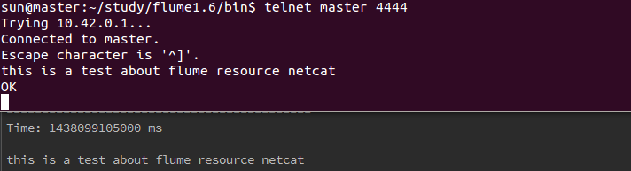
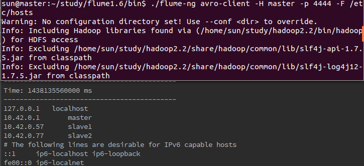
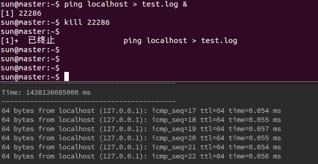
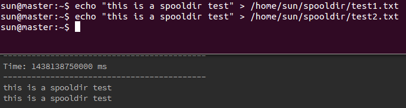
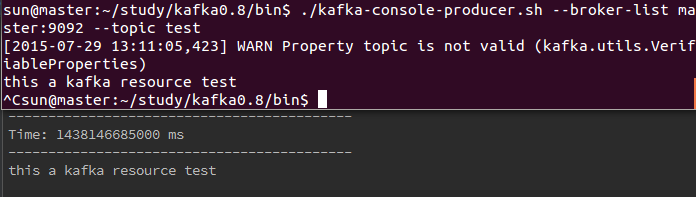
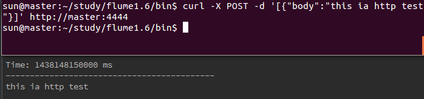
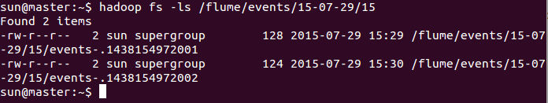
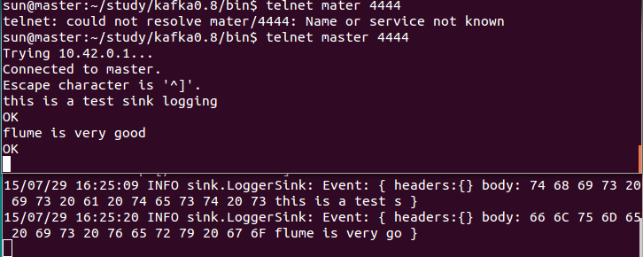
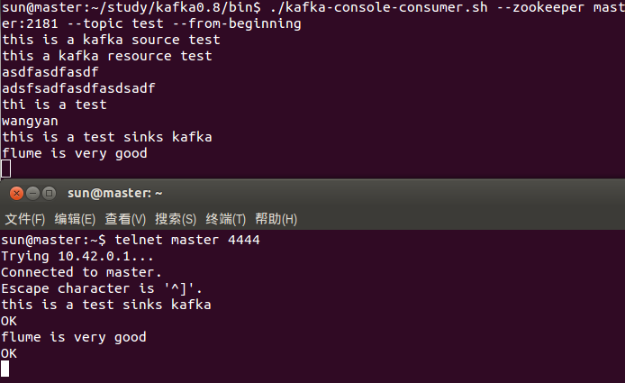

flume是一个分布式、可靠、和高可用的海量日志聚合的系统，支持在系统中定制各类数据发送方，用于收集数据；同时，Flume提供对数据进行简单处理，并写到各种数据接受方（可定制）的能力。需要注意的是,flume有og和ng的版本区别.
flume下载,在官网下载flume发行版,我选择的是最新的1.6,然后在本地某目录下解压缩,安装就完成了,为了以后执行命令方便,也可以设置好环境变量.
上图是flume ng的单点架构,source,channel,sink分别是源,通道,接收器,它们共同组成了一个代理(agent).本文中接收器(hostname:master,port:9998)为如下所示的spark-streaming程序,简单的输出内容,注意,运行程序需要导入 spark-streaming-flume_2.10和flume-ng-log4jappender-1.6.0-jar-with-dependencies(flume安装目录的tools目录中),你可以通过maven/sbt构建工具或者手动添加到classpath.
def main(args: Array[String]) {
val conf=new SparkConf().setAppName("flumeDemo").setMaster("local[*]")
val ssc=new StreamingContext(conf,Seconds(5))
import org.apache.spark.streaming.flume._
val flumeStream=FlumeUtils.createStream(ssc,"master",9998)
//输出SparkFlumeEvent内容
flumeStream.map(e=>new String(e.event.getBody.array)).print(100)
ssc.start
ssc.awaitTermination
}
source主要完成对日志的收集,有多种收集源,分成transtion 和 event 打入到channel之中.
新建一份内容如下的文件,路径随意(不要找不到就好),文件名随意.这是一个代理的配置文件,可以看出包含了source,sinks,channels三个块,a1是代理的名字,后面启动的时候会用到,r1,k1,c1也都是自定义的名字,如果要改的话要把文件中出现的也都改掉.我们现在关注sources块,在接下来的source的例子里,则只会贴出sources部分的修改,其他的没有变化,可以cp这份配置,修改相应的配置.
a1.sources = r1
a1.sinks = k1
a1.channels = c1
# 配置source的选项
a1.sources.r1.type = netcat
a1.sources.r1.bind = master
a1.sources.r1.port = 4444
# 配置sinks,如上面的spark-streaming中所示,hostname=master,port=9998
a1.sinks.k1.type = avro
a1.sinks.k1.hostname = master
a1.sinks.k1.port = 9998
# 配置channels,这里使用内存作为数据通道
a1.channels.c1.type = memory
a1.channels.c1.capacity = 1000
a1.channels.c1.transactionCapacity = 100
# 绑定source和sinks到相应的channel
a1.sources.r1.channels = c1
a1.sinks.k1.channel = c1
要先启动spark-streaming程序,再启动代理,否则会提示:Unable to create Rpc client using hostname: master, port: 9998.启动代理需要的参数是代理的名字(配置文件中)(-n)和配置文件(-f).在flume安装目录的bin目录下执行(应为我没配环境变量)
./flume-ng agent -n a1 -f ../conf/flume-netcat-conf.properties
启动成功后会提示Rpc sink k1 started.k1也是配置文件中的名字.
现在如果在执行nc -lk 4444,则会提示 Address already in use.端口4444是在配置文件中的.
用telnet来向localhost:4444端口发送数据,需要注意的是,这里要和配置文件中的source.hostname一致,比如配置文件中是localhost,就不能telnet master 4444,否则提示Connection refused.
执行命令telnet hostname 4444,进入后输入数据则在spark-streaming的输出中能看到.退出telnet命令行按ctrl+],回车,输quit,回车.

avro可以理解为某个节点,这种方式指数据从节点上的某端口传递.
配置文件,修改resource部分.
a1.sources.r1.type = avro
a1.sources.r1.bind = master
a1.sources.r1.port = 4444
启动avro代理.具体的代理名和配置文件路径以你的配置为准,启动成功会提示Avro source r1 started.
./flume-ng agent -n a1 -f ../conf/flume-conf.properties
接着我们可以使用flume自带的avro-client客户端向agent代理发送数据(同样实在flume安装目录下的bin目录下执行)
./flume-ng avro-client -H master -p 4444 -F /etc/hosts
执行后在sark-streaming程序的输出中能看到相应的文件内容输出.

exec执行一个给定的命令使其输出作为源,一般来说命令的输出是持续的,比如tail -F,对某一个文件进行循环查看.
配置文件,修改resource部分.我这里修改了代理的名字,所以配置文件中都需要由a1改为exec1.另外如果是需要使用某类shell特有的命令,你还需要配置shell选项,如图中的注释行.
exec1.sources.r1.type = exec
exec1.sources.r1.command = tail -F /home/sun/test.log
#exec1.sources.r1.shell = /bin/bash -c
启动exec代理,成功会提示Rpc sink k1 started.
./flume-ng agent -n exec1 -f ../conf/flume-exec-conf.properties
接着我用ping localhost > /home/sun/test.log &命令来向test.log进行持续修改,&表示后台执行,终止用kill命令.

spoooling监测配置的目录下新增的文件，并将文件中的数据读取出来.有两点需要注意:1.在目录成为Spooling Directory后其中的文件不可再修改.2.Spooling Directory中不能在包含子目录.
配置文件.fileHeader是指是否添加一个存储的绝对路径名的头文件,默认为false.试验了一下,发现spoolDir并不支持hdfs路径
a1.sources.r1.type = spooldir
a1.sources.src-1.spoolDir = /home/sun/spooldir
a1.sources.r1.fileHeader = true
可以看到我配置的目录为/home/sun/spooldir,flume会在代理启动后自动对该目录进行监测.
启动代理后往文件夹中增加文件在spark-streaming程序中会有相应输出
./flume-ng agent -n a1 -f ../conf/flume-spoooling-conf.properties

kafka是一种高吞吐量的分布式发布订阅消息系统,这里也是单节点的测试使用,使用kafka作为flume的source,通常kafka是作为flume的sinks的.
首先需要下载kafka,下载后解压到某路径下即可,为了命令的方便,可以配置环境变量,kafka源是一个kafka消费者(consumer),从指定的topic中读取消息.
kafka需要zookeeper服务,它也自带有zookeeper,启动一个单实例的zookeeper服务,在kafka安装目录的bin目录下执行(如果没有配置环境变量),&符号前面说道过,让其后台执行,这样不用再新开一个终端.
./zookeeper-server-start.sh ../config/zookeeper.properties &
接着启动kafka服务
./kafka-server-start.sh ../config/server.properties &
创建topic.
./kafka-topics.sh --create --zookeeper master:2181 --replication 1 --partitions 1 --topic test
可以通过如下的命令来检验创建的名为test的topic是否存在.
./kafka-topics.sh --list --zookeeper master:2181
现在来写kafka Source的代理的配置文件,这里的type是一个自定义的类,有flume做了实现,groupId默认为flume,所以可以不用配置.注意这里的topic配置为test,要和上面创建的topic名字对应上.
kafka1.sources.r1.type = org.apache.flume.source.kafka.KafkaSource
kafka1.sources.r1.zookeeperConnect = master:2181
kafka1.sources.r1.topic = test
kafka1.sources.r1.kafka.consumer.timeout.ms = 100
启动代理.成功会提示Kafka source r1 started.
./flume-ng agent -n kafka1 -f ../conf/flume-kafka-conf.properties
接着用kafka向名为test的topic发消息.(较早版本的kafka需要使用./kafka-console-producer.sh --zookeeper master:2181 --topic test),便能在spark-streaming程序中看到消息内容的输出.

一个接收http get/post请求变为flume event的源,配置文件如下,handle默认值便是org.apache.flume.source.http.JSONHandler,所以可以注释掉.
a1.sources.r1.type = http
a1.sources.r1.port = 4444
#a1.sources.r1.handle = org.apache.flume.source.http.JSONHandler
启动该代理.然后发json请求给4444端口,便能被spark-streaming程序处理到,这里主机名用master或localhost都可以.
./flume-ng agent -n a1 -f ../conf/flume-http-conf.properties

更多source配置请参见flume官方文档.
Channels是事件发生在代理上的存储库.源向其中添加事件而sinks处理并删除事件.
在前面我们一直用的这种channel，它将source的数据存放在内存中，并由sinks接收处理。
官方的配置如下
a1.channels = c1
#使用memory channel的名字
a1.channels.c1.type = memory
#每个event的最大大小(byte)
a1.channels.c1.capacity = 10000
#允许由source发送，由sinks接收的最大event大小
a1.channels.c1.transactionCapacity = 10000
#定义byteCapacity的缓冲百分比
a1.channels.c1.byteCapacityBufferPercentage = 20
a1.channels.c1.byteCapacity = 800000
使用jdbc来作为event的存储，当前flume只支持derby数据库.
a1.channels.c1.type = jdbc
其他的都可以不用改,都有合适的默认值，如果不指定driver.url，flume会把数据库创建在~/.flume/jdbc-channel/db，用户名为sa.我试着用jdk自带的derby来连接创建的数据库，能连接上但查询不了数据，先放在这儿。
配置文件。不指定checkpoint和dataDirs则会创建在～/.flume/file-channel中
a1.channels.c1.type = file
#a1.channels.c1.checkpointDir = /mnt/flume/checkpoint
#a1.channels.c1.dataDirs = /mnt/flume/data
缓存的文件查看也是乱码的。
更多channel配置请参见flume官方文档.
Sinks从chanel中获取数据，同时它也能把数据继续传递给代理，这在分布式的场景下是会用到的。
将事件写入到hdfs中，目前只支持创建文本文件和序列化文件。
a1.sinks.k1.type = hdfs
#hdfs的存储路径，使用时间的指代式
a1.sinks.k1.hdfs.path = /flume/events/%y-%m-%d/%H
#创建文件的名字的前缀
a1.sinks.k1.hdfs.filePrefix = events-
#时间滚动，默认为false。从%t改变
a1.sinks.k1.hdfs.round = true
#多久改变一次，相对于roundUnit而言
a1.sinks.k1.hdfs.roundValue = 1
a1.sinks.k1.hdfs.roundUnit = hour
#使用时间戳，没有报错
a1.sinks.k1.hdfs.useLocalTimeStamp = true
在启动代理并输入数据后，在hdfs上会看到相应的文件被创建。表示15年7月29日15时的记录，以小时为单位，而且文件名也是我们上面设置的前缀。

将event打印到标准输出，通常用于调试目的。
a1.sinks.k1.type = logger

使用kafka作为sink，这也是通常的做法，用flume收集数据发给kafka，再由kafka与实时流处理框架交互，得到结果再输出保存。
和前面介绍kafka作为source一样，启动单实例的zookeeper服务。
./zookeeper-server-start.sh ../config/zookeeper.properties &
接着启动kafka服务。 ./kafka-server-start.sh ../config/server.properties &
创建topic.(如果已经创建则不需要) ./kafka-topics.sh --create --zookeeper master:2181 --replication 1 --partitions 1 --topic test
可以通过如下的命令来检验创建的名为test的topic是否存在. ./kafka-topics.sh --list --zookeeper master:2181
配置文件。topic的名字和上面的相应
a1.sinks.k1.type = org.apache.flume.sink.kafka.KafkaSink
a1.sinks.k1.topic = test
a1.sinks.k1.brokerList = master:9092
启动代理后，使用telnet发消息(配置的source为netcat)。再用 ./kafka-console-consumer.sh --zookeeper master:2181 --topic test --from-beginning查看。可以收到消息。

把事件发送给配置的主机端口。spark-streaming程序接收相应主机端口的事件消息进行处理。
配置文件。
a1.sinks.k1.type = avro
a1.sinks.k1.hostname = master
a1.sinks.k1.port = 9998
更多sinks配置请参见flume官方文档.